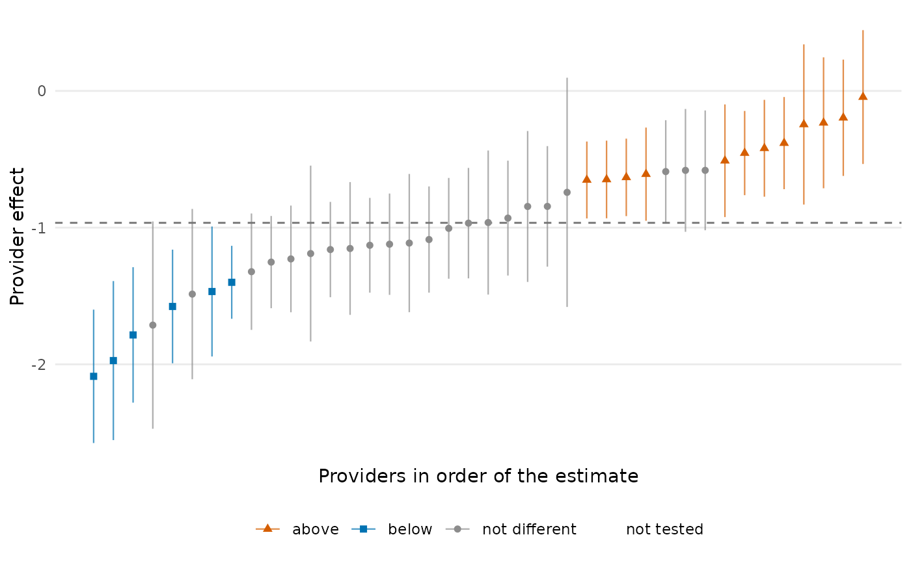
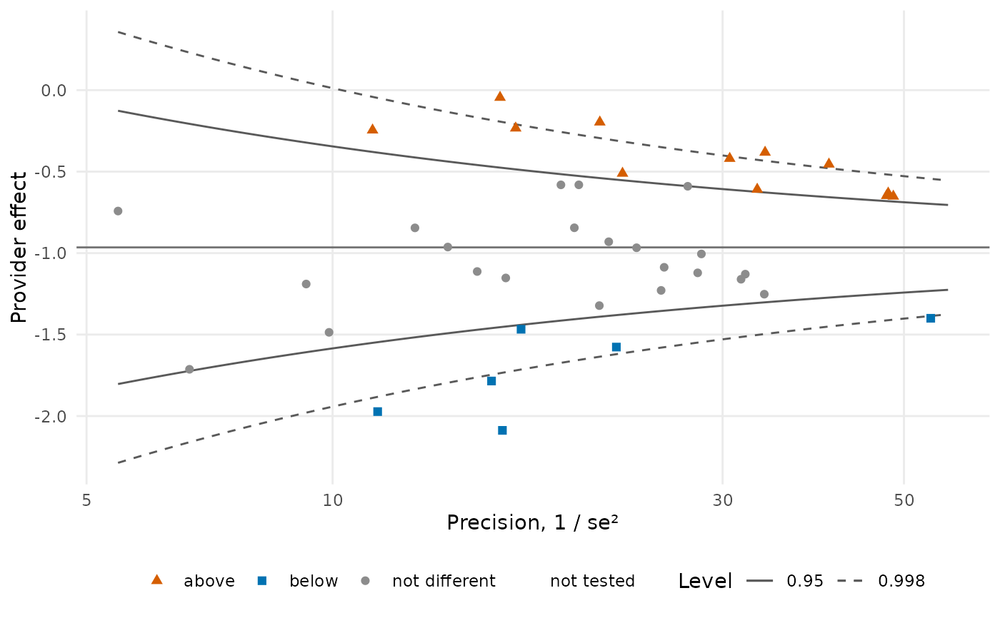
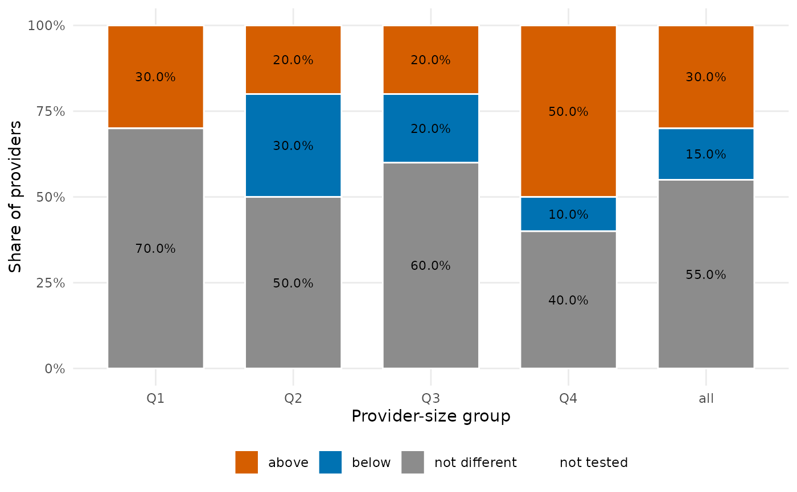
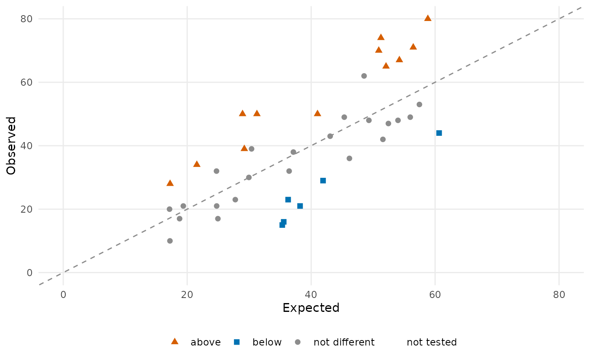
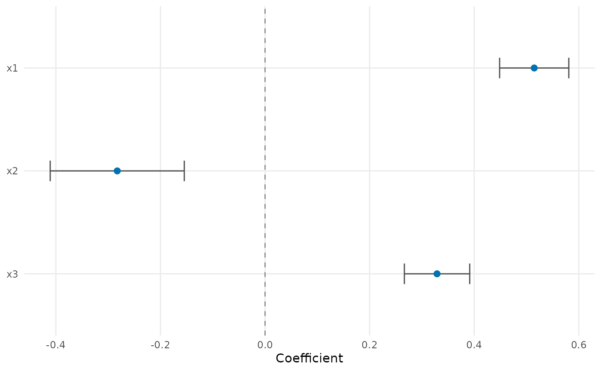
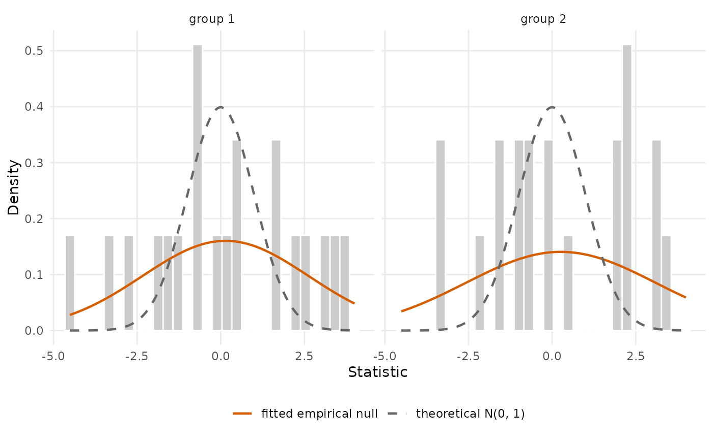

plot() methods for the objects of the package, drawn with ggplot2 and
returned as ggplot objects to be printed, modified or saved:
a
test()result:type = "caterpillar"(every provider's estimate and interval in order of the estimate, coloured by flag; a score test's intervals invert the test, seetest.logistic_fe()),"funnel"(estimates against precision, with the control limits of the same test, so that a provider lies outside the limits exactly when it is flagged: on the precision axis \(1 / se^2\) for a test with standard errors, with limits \(\theta_0 \pm c\, se\); on the precision axis \(E^2 / V\) for a score test, the observed over expected events with limits \(1 + (m \pm c\, s) / \sqrt{E^2 / V}\) where \(V\) is the variance of that test (naive, robust or stabilized) and \((m, s)\) its null; on the expected-count axis for the Poisson tests oftest.cox(), with the counts the test flags at every expected count; one curve per group when the test was calibrated with an empirical null) or"bar"(the shares of providers flagged above, below and not different, by provider-size group);a
standardize()result:type = "observed_expected"(observed against expected with the diagonal, coloured by the flags of a test when one is given) or"funnel"(the ratio against its precision \(E^2 / V\); without a test, the normal limits of the naive score statistic and no colours; withtest =a score test, that test's own funnel, so that the limits and the colours come from the same test. A Wald-type test is refused here: draw it withplot(test, type = "funnel"));a
summary()result: a forest plot of the coefficients;an empirical
null_model(): the statistics against the theoretical and the fitted null, one panel per group;an
iur()result: the reliability curve against provider size;a
var_select()path: the coefficient paths; itscv(): the cross-validation curve.
Usage
# S3 method for class 'pp_test'
plot(
x,
type = c("caterpillar", "funnel", "bar"),
highlight = NULL,
levels = c(0.95, 0.998),
n_groups = 4,
...
)
# S3 method for class 'pp_measure'
plot(
x,
type = c("observed_expected", "funnel"),
test = NULL,
highlight = NULL,
levels = c(0.95, 0.998),
...
)
# S3 method for class 'pp_summary'
plot(x, exponentiate = FALSE, ...)
# S3 method for class 'pp_null'
plot(x, ...)
# S3 method for class 'pp_iur'
plot(x, ...)
# S3 method for class 'pp_lasso'
plot(x, ...)
# S3 method for class 'pp_cv'
plot(x, ...)
# S3 method for class 'pp_stability'
plot(x, ...)Arguments
- x
the object.
- type
the display, see above.
- highlight
provider identifiers to label.
- levels
for the funnel plot of a test with standard errors, the levels of the limit curves; the first is the test's own level, the others are drawn dashed.
- n_groups
for
type = "bar", the number of provider-size groups (quartiles by default).- ...
unused.
- test
for a
standardize()result, atest()result whose flags colour the providers.- exponentiate
for a
summary()result, showexp(estimate)(odds or hazard ratios) on a log axis.
Examples
d <- sim_kecc(n_providers = 40, seed = 1)
pd <- pp_data(d, y = "y", x = c("x1", "x2", "x3"), provider = "provider",
patient = "patient", message = FALSE)
fit <- fit_logistic_fe(pd)
tst <- test(fit, statistic = "wald", variance = "robust")
plot(tst)

plot(tst, type = "funnel")

plot(tst, type = "bar")

plot(standardize(fit), test = tst)

plot(summary(fit))
#> `height` was translated to `width`.

plot(null_model("empirical", tst, n_groups = 2))
